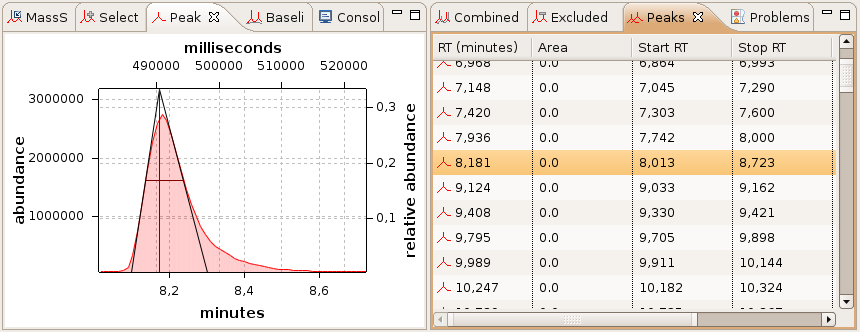

Peak Detector First Derivative
The Peak Detector First Derivative tries to detect peaks in the selected chromatogram.
The results will be shown in the peak list view.
The results are exportable using the context menu or CTRL+C & CTRL+V (copy & paste).
The peak view will show the selected peak from the peak list.
Peak and peak list view:
